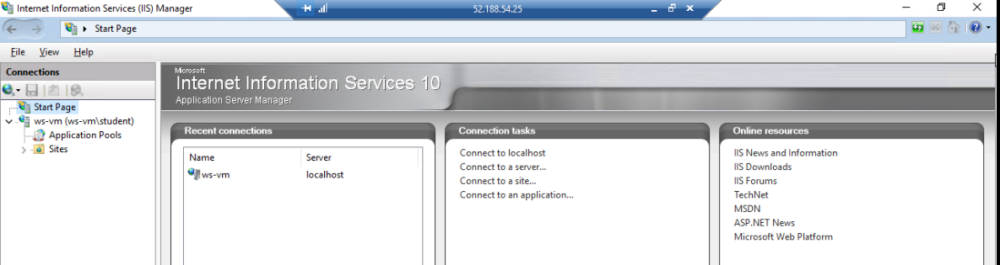

When learning about hosting content on the web, you will come across the terms server, web server, web application server, and web application framework. This can make it easy to be confused about what role each of these plays. While these terms are sometimes mistakenly used interchangeably, it is important to distinguish them to form a strong mental model. Understanding and properly communicating the details of a web hosting system are critical aspects of being able to design it, and to troubleshoot and solve any problems that arise.
Before we get into defining each of these, consider the following diagram that shows how the components of a web hosting system relate to each other:
The relationship between server, web server, and application server
A server, or host machine, is the broadest and most ambiguous of these terms. In the context of operations it refers to the physical, or virtualized, hardware itself, such as a Windows Server or Linux machine. Think of this as the outermost box of the system; it holds each of the other components within it. Servers do not necessarily have anything to do with the web, they are just powerful machines whose roles are defined by the software they run.
When discussing web-related roles, a server is responsible for handling network requests of various protocols and passing the packets off to the appropriate service for handling them. In our context, the packets are passed off to a web server service designed for managing raw HTTP traffic.
The web server is responsible for handling the low-level HTTP logic needed to process requests and send responses. They are usually written in similarly low-level languages like C or C++ to maximize their performance. This makes them capable of handling thousands of requests at a time. Web servers do not contain business logic code and are only modified using configuration files written in XML or other structured language formats.
Web servers can be used to serve static content (content that does not change programmatically) such as HTML, CSS, JavaScript, images, and other files located on the server. When serving dynamic content a web server acts as the middle man between the server machine and the application server that generates the dynamic content.
Web servers handle things like:
A web application server is defined by the source code that developers work on. In the context of development, it is sometimes referred to as an app server, web app, or, adding to the confusion, just a server. App servers are written in C#/ASP.NET, NodeJS/Express, PHP/Laravel or any other number of language and web application framework combinations. Application servers are made up of code that defines business logic for working with data and processing requests. They are not responsible for dealing with the underlying HTTP logic. Instead, they deal with request and response objects within the code that are managed by the web application framework.
Application servers handle things like:
Web application frameworks, like ASP.NET, have connectors for transforming raw HTTP requests received from a web server into request objects that can be processed by the application server’s business logic code. When they are done processing the request they send out a response object through another connector to transform it into a raw HTTP response for the web server to work with.
Web application framework connector between web server and application server
All ASP.NET application servers come packaged with a lightweight web server called Kestrel. When you run your application server on your local machine, it is Kestrel that manages the underlying HTTP logic. This is done transparently for you, so you only have to work with request and response objects within your code. However, being a lightweight web server, Kestrel has limited capabilities.
Because it has been designed as a simple web server, it is not recommended to use Kestrel by itself, as referenced in the Microsoft documentation. When deploying to a Linux machine, Kestrel can be used behind a more robust web server like Nginx in a reverse proxy arrangement. However, when you have the luxury of working with a Windows Server machine, the IIS web server is hands-down the best choice for the job.
The Internet Information Service (IIS) is a web server made for exclusive use by host machines running the Windows Server OS. IIS can be added to any server that assumes the Web Server Role. The IIS Management Console makes it easy to serve static content and dynamic content generated by ASP.NET application servers. It is deeply customizable, offering dozens of Role Services for supporting additional behaviors like authentication, caching, logging, and more.
The IIS Management Console is an application for monitoring and configuring the sites that IIS serves. It can be installed on the host server directly or used to manage IIS remotely from another machine.
Each site, or website, served by IIS corresponds to a directory that contains either static content or the artifact files of a published ASP.NET Web App. A site is managed by an application pool, which is configured according to what content is being served.
Sites are bounded by their content directory and listening port. IIS is capable of serving any number of Sites. But, like all server processes running on a machine, each site must be bound to a unique port.
..index:: ! application pool
Application pools are individual w3wp web server processes that run within the host machine. They are used to define and manage the runtime behavior of the w3wp process that serves the sites assigned to them. Each application pool can be customized to control features including resource access, request rate limiting, and CPU utilization caps.
While we will be using IIS to serve a single site, there are cases where multiple sites of content need to be managed in one web server. When considering these multi-site scenarios, the ability for application pools to be compartmentalized from each other is invaluable.
Each application pool can be customized to run with a specific security and resource utilization profile. This feature allows for sites to be operated independently, and prevents one crash or malicious attack from impacting other sites or the server as a whole.
Serving static content is as easy as telling IIS which directory the content is located and which port to listen and serve from. IIS comes pre-configured with a default site made up of static HTML and CSS files available on port 80. The default site is managed by the default application pool that is also pre-configured.
Serving ASP.NET web applications requires a bit more effort. However, it is still leagues ahead of alternative web servers when it comes to ease of configuration. Out of the box, IIS relies on the .NET runtime and an additional dependency called the dotnetcore-windowshosting bundle for serving web apps.
Rather than running a Web application server directly, the IIS web server is responsible for executing and forwarding traffic for you. The site’s directory holds the executable artifacts produced from publishing the web app with dotnet publish. An application pool is then customized for serving dynamic content which manages the life cycle and behavior of how the web app is served.
In this article, we covered the technical differences and responsibilities of servers, web servers, web application servers and web application frameworks. You should feel comfortable describing the differences between each of these components and have a mental model of how they interact with each other.
{kind=link}